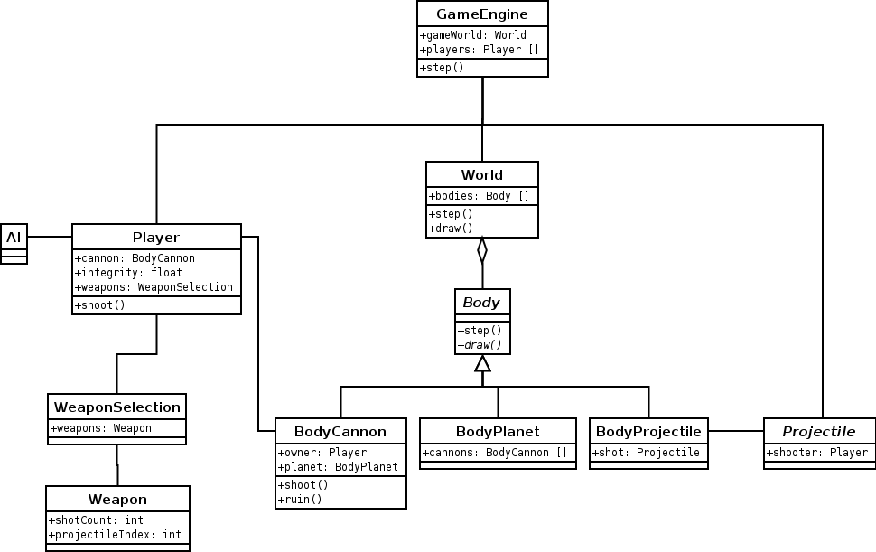
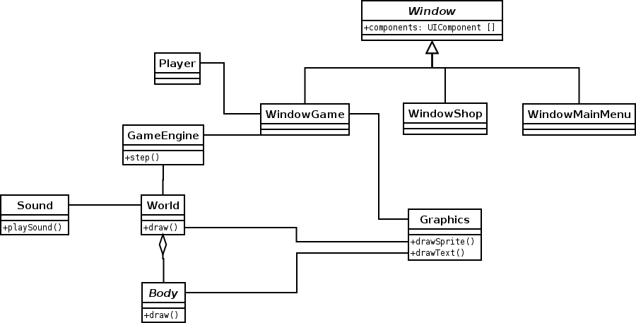

Front page - Manual - Architecture - Algorithms - Bugs - Tasks sharing - Differences - Sources - Doxygen - References
For simplicity, only the most important classes are drawn in the UML diagrams. Full list of classes can be seen in the documentation created with Doxygen.

Bodies are objects that are visible in the game world. BodyCannon, BodyPlanet and BodyProjectile are the most important ones and there are BodyExplosion and BodyDebris for visual effects. World is basically a container for Bodies.
Player is an object corresponding to the real-life player and computer players are Players with a special AI module. Player owns a cannon that is located in the world. Shooting functionality is located in BodyCannon and Player only gives commands to it. Properties like money and score are associated with Player.
Different weapons are subclasses of Projectile. Players have lots of similar wapons and we don't want to have a unique object for each. Classes Weapon and WeaponSelection keep track of player's weapon arsenal. Weapon class corresponds to a weapon crate. It contains lots of weapons of the same type. No actual Projectile objects are stored, but only the number of projectiles in the crate. WeaponSelection is like a shelf. It contains lots of weapon crates. Function of WeaponSelection is actually to get automatically rid of Weapon objects that are out of ammo.
When a projectile is fired, GameEngine creates a clone of the right projectile. The projectile is encapsulated inside a BodyProjectile. All functionality and intelligense are in Projectile. The reason that Projectiles are not Bodies is that Bodies are not allowed to exist outside of the world. This decision was made to avoid problems but it was probably unnecessary.
GameEngine is the class that makes everything work together. It's step function is called periodically. It calls step function of World which in turn calls step functions of all Bodies and this makes everything move. Bodies ask about gravity from World and move according to that. If Bodies collide, they communicate directly with each other and may create new Bodies like explosions. Damage to a player is, however, done by Projectile because integrity is a property of Player and not BodyCannon.

When a window is opened, execution stucks in the event loop of the window. If a button or a key is pressed, an event handler of the window is called. Event loop also calls the step function of the window periodically. This allows us to play animation. In game window, for example, step function of the game engine is called by the step function of game window. Windowing makes it very easy to add different windows that modify game engine or the world in different ways. Game engine doesn't have to know what is happening in the windows above.
Events concerning the player in turn are sent to the Player object. Since AIs are Players too, this gives human players and AIs exactly the same interface to the cannon and weapons. This way it's also easy to disable controls when an AI has turn.
When game world has to be drawn, WindowGame asks World to draw itself. World in turn asks all Bodies to draw themselves. A reference of Graphics is sent as a reference to give Bodies access to drawing functions. It might be more elegant to have graphics engine to read properties of Bodies and draw graphics according to them, but the diversity of Bodies makes this difficult. There has to be different drawing functions for different types Bodies and it was easest to add them directly into Bodies.
UI components are drawn after the game view as an overlay. Game engine or game world are not even aware that there is an UI.
Bodies usually use common game graphics to save memory and make drawing easier. In some cases, especially with rotating objects, we want to modify common game graphics and store the result for later use. This is where Sprite class steps in. It is a store for a picture, so that Bodies don't have to know details of the inner workings of pictures.
World has a reference to the sound engine. If Bodies want to make noise, they ask World to activate a sound. This way we don't have to give Bodies a reference to the sound engine. Sound indexes are defined in a separate file.
Front page - Manual - Architecture - Algorithms - Bugs - Tasks sharing - Differences - Sources - Doxygen - References